Generado: 2026-06-22T12:23:29
Problemas: 80 | Page Nodes: 1040 | Backend semantico: tfidf-svd-fallback
Este dashboard compara metodos de recuperacion, backends vectoriales y clasificacion textual de ideas. No implementa PageIndex tree-search ni ejecuta soluciones contra tests.
Interacciones evaluadas por juez RAG: 6
local_matrix: ok faiss: ok chromadb: ok Problemas demo: ['codeforces_750_A', 'codeforces_1915_C', 'codeforces_192_A']
Clasificador actual: {'UNKNOWN': 4, 'MATH': 2}
Estrategia fina: {'BINARY_SEARCH': 3, 'MATH_FORMULA': 3}
Resume respuestas generadas, contexto recuperado y recomendaciones personalizadas. En esta version es un juez heuristico reproducible; puede reemplazarse por GPT usando el mismo contrato de metricas.
| Metrica | Umbral | Promedio | Desviacion estandar | % >= umbral |
|---|---|---|---|---|
| Faithfulness | 0.8 | 0.95 | 0.004 | 100 % |
| Answer Relevancy | 0.85 | 0.87 | 0.005 | 100 % |
| Context Precision | 0.7 | 1.0 | 0.0 | 100 % |
| Strategy Classification | 0.8 | 1.0 | 0.0 | 100 % |
| Recommendation Fit | 0.75 | 0.92 | 0.0 | 100 % |
| Query | Precision@k | Recall@k | Reciprocal rank | Avg similarity |
|---|---|---|---|---|
| greedy proof | 0.0 | 0.0 | 0.0 | 0.371 |
| dp state transition | 1.0 | 0.333 | 1.0 | 0.346 |
| edge cases implementation | 0.833 | 0.278 | 1.0 | 0.314 |
| Backend | Precision@k | Recall@k | Reciprocal rank | Latency ms/query |
|---|---|---|---|---|
| chromadb | 0.05 | 0.04 | 0.1667 | 1729.67 |
| faiss | 0.05 | 0.04 | 0.1667 | 74.251 |
| local_matrix | 0.05 | 0.04 | 0.1667 | 10.277 |
Esta tabla muestra el top-3 por backend para las queries de la demo binary/math. El grafico equivalente es vector_backend_overlap.png; para metodos del RAG base es retrieval_method_overlap.png.
| Query demo | Backend | Rank | Problema recuperado | Node type | Score | Relevante |
|---|---|---|---|---|---|---|
| binary_quadratic_time | local_matrix | 1 | codeforces_1985_F | APPROACH | 0.891145 | False |
| binary_quadratic_time | local_matrix | 2 | codeforces_2148_E | APPROACH | 0.87097 | False |
| binary_quadratic_time | local_matrix | 3 | codeforces_2044_E | APPROACH | 0.856359 | False |
| integer_square_root | local_matrix | 1 | codeforces_2167_A | EDITORIAL_FULL | 0.685756 | False |
| integer_square_root | local_matrix | 2 | codeforces_2167_A | PROBLEM | 0.681192 | False |
| integer_square_root | local_matrix | 3 | codeforces_2167_A | STATEMENT | 0.644658 | False |
| triangular_discriminant | local_matrix | 1 | codeforces_1985_F | APPROACH | 0.842806 | False |
| triangular_discriminant | local_matrix | 2 | codeforces_2148_E | APPROACH | 0.80684 | False |
| triangular_discriminant | local_matrix | 3 | codeforces_2044_E | APPROACH | 0.791561 | False |
| binary_quadratic_time | faiss | 1 | codeforces_1985_F | APPROACH | 0.891145 | False |
| binary_quadratic_time | faiss | 2 | codeforces_2148_E | APPROACH | 0.87097 | False |
| binary_quadratic_time | faiss | 3 | codeforces_2044_E | APPROACH | 0.856359 | False |
| integer_square_root | faiss | 1 | codeforces_2167_A | EDITORIAL_FULL | 0.685756 | False |
| integer_square_root | faiss | 2 | codeforces_2167_A | PROBLEM | 0.681192 | False |
| integer_square_root | faiss | 3 | codeforces_2167_A | STATEMENT | 0.644658 | False |
| triangular_discriminant | faiss | 1 | codeforces_1985_F | APPROACH | 0.842806 | False |
| triangular_discriminant | faiss | 2 | codeforces_2148_E | APPROACH | 0.80684 | False |
| triangular_discriminant | faiss | 3 | codeforces_2044_E | APPROACH | 0.791561 | False |
| binary_quadratic_time | chromadb | 1 | codeforces_1985_F | APPROACH | 0.891146 | False |
| binary_quadratic_time | chromadb | 2 | codeforces_2148_E | APPROACH | 0.87097 | False |
| binary_quadratic_time | chromadb | 3 | codeforces_2044_E | APPROACH | 0.85636 | False |
| integer_square_root | chromadb | 1 | codeforces_2167_A | EDITORIAL_FULL | 0.685756 | False |
| integer_square_root | chromadb | 2 | codeforces_2167_A | PROBLEM | 0.681192 | False |
| integer_square_root | chromadb | 3 | codeforces_2167_A | STATEMENT | 0.644658 | False |
| triangular_discriminant | chromadb | 1 | codeforces_1985_F | APPROACH | 0.842806 | False |
| triangular_discriminant | chromadb | 2 | codeforces_2148_E | APPROACH | 0.80684 | False |
| triangular_discriminant | chromadb | 3 | codeforces_2044_E | APPROACH | 0.791561 | False |
Estos son los problemas usados para mostrar dos rutas de solucion posibles: una algoritmica por busqueda binaria y otra matematica por formula, raiz entera o discriminante.
| ID | Problema | Dificultad | Estrategias aceptadas | Idea matematica |
|---|---|---|---|---|
| codeforces_750_A | New Year and Hurry | 800 | ["BINARY_SEARCH", "MATH_FORMULA"] | Core inequality: 5*x*(x+1)/2 <= 240-k. |
| codeforces_1915_C | Can I Square? | 800 | ["BINARY_SEARCH", "MATH_FORMULA"] | Core condition: exists integer r such that r*r equals the total sum. |
| codeforces_192_A | Funky Numbers | 1300 | ["BINARY_SEARCH", "MATH_FORMULA", "PRECOMPUTE_ENUMERATION"] | Triangular number: T_i = i*(i+1)/2. |
Aqui se ve que el clasificador actual responde UNKNOWN o MATH, mientras que la capa fina esperada separa BINARY_SEARCH y MATH_FORMULA.
| Estudiante | Problema | Idea recibida | Respuesta actual | Estrategia fina | Brecha detectada |
|---|---|---|---|---|---|
| student_binary | New Year and Hurry | I will binary search the maximum x. The check is 5*x*(x+1)/2 <= 240-k and x <= n. | UNKNOWN | BINARY_SEARCH | current_heuristic_has_no_binary_search_class |
| student_binary | Can I Square? | I can binary search the integer root r and compare r*r with the sum to avoid floating point sqrt. | UNKNOWN | BINARY_SEARCH | current_heuristic_has_no_binary_search_class |
| student_binary | Funky Numbers | I will precompute triangular numbers and for each value binary search if n minus it is also triangular. | UNKNOWN | BINARY_SEARCH | current_heuristic_has_no_binary_search_class |
| student_formula | New Year and Hurry | I want to solve the quadratic formula for x^2+x-2*T <= 0 and use sqrt(1+8*T). | MATH | MATH_FORMULA | current_heuristic_collapses_formula_to_math |
| student_formula | Can I Square? | I compute the integer sqrt of the total sum and check root*root == sum as the formula condition. | MATH | MATH_FORMULA | current_heuristic_collapses_formula_to_math |
| student_formula | Funky Numbers | For each triangular t, I test n-t with the discriminant 1+8*m being a perfect square. | UNKNOWN | MATH_FORMULA | current_heuristic_partial |
Esta tabla y los graficos strategy_prediction_by_model.png y strategy_accuracy_by_model.png muestran si cada modelo/backend diferencia BINARY_SEARCH de MATH_FORMULA.
| Modelo | Estudiante | Problema | Idea | Esperado | Predicho | Correcto |
|---|---|---|---|---|---|---|
| current_heuristic | student_binary | New Year and Hurry | I will binary search the maximum x. The check is 5*x*(x+1)/2 <= 240-k and x <= n. | BINARY_SEARCH | UNKNOWN | False |
| current_heuristic | student_binary | Can I Square? | I can binary search the integer root r and compare r*r with the sum to avoid floating point sqrt. | BINARY_SEARCH | UNKNOWN | False |
| current_heuristic | student_binary | Funky Numbers | I will precompute triangular numbers and for each value binary search if n minus it is also triangular. | BINARY_SEARCH | UNKNOWN | False |
| current_heuristic | student_formula | New Year and Hurry | I want to solve the quadratic formula for x^2+x-2*T <= 0 and use sqrt(1+8*T). | MATH_FORMULA | MATH | False |
| current_heuristic | student_formula | Can I Square? | I compute the integer sqrt of the total sum and check root*root == sum as the formula condition. | MATH_FORMULA | MATH | False |
| current_heuristic | student_formula | Funky Numbers | For each triangular t, I test n-t with the discriminant 1+8*m being a perfect square. | MATH_FORMULA | UNKNOWN | False |
| local_matrix | student_binary | New Year and Hurry | I will binary search the maximum x. The check is 5*x*(x+1)/2 <= 240-k and x <= n. | BINARY_SEARCH | BINARY_SEARCH | True |
| local_matrix | student_binary | Can I Square? | I can binary search the integer root r and compare r*r with the sum to avoid floating point sqrt. | BINARY_SEARCH | BINARY_SEARCH | True |
| local_matrix | student_binary | Funky Numbers | I will precompute triangular numbers and for each value binary search if n minus it is also triangular. | BINARY_SEARCH | BINARY_SEARCH | True |
| local_matrix | student_formula | New Year and Hurry | I want to solve the quadratic formula for x^2+x-2*T <= 0 and use sqrt(1+8*T). | MATH_FORMULA | MATH_FORMULA | True |
| local_matrix | student_formula | Can I Square? | I compute the integer sqrt of the total sum and check root*root == sum as the formula condition. | MATH_FORMULA | MATH_FORMULA | True |
| local_matrix | student_formula | Funky Numbers | For each triangular t, I test n-t with the discriminant 1+8*m being a perfect square. | MATH_FORMULA | MATH_FORMULA | True |
| faiss | student_binary | New Year and Hurry | I will binary search the maximum x. The check is 5*x*(x+1)/2 <= 240-k and x <= n. | BINARY_SEARCH | BINARY_SEARCH | True |
| faiss | student_binary | Can I Square? | I can binary search the integer root r and compare r*r with the sum to avoid floating point sqrt. | BINARY_SEARCH | BINARY_SEARCH | True |
| faiss | student_binary | Funky Numbers | I will precompute triangular numbers and for each value binary search if n minus it is also triangular. | BINARY_SEARCH | BINARY_SEARCH | True |
| faiss | student_formula | New Year and Hurry | I want to solve the quadratic formula for x^2+x-2*T <= 0 and use sqrt(1+8*T). | MATH_FORMULA | MATH_FORMULA | True |
| faiss | student_formula | Can I Square? | I compute the integer sqrt of the total sum and check root*root == sum as the formula condition. | MATH_FORMULA | MATH_FORMULA | True |
| faiss | student_formula | Funky Numbers | For each triangular t, I test n-t with the discriminant 1+8*m being a perfect square. | MATH_FORMULA | MATH_FORMULA | True |
| chromadb | student_binary | New Year and Hurry | I will binary search the maximum x. The check is 5*x*(x+1)/2 <= 240-k and x <= n. | BINARY_SEARCH | BINARY_SEARCH | True |
| chromadb | student_binary | Can I Square? | I can binary search the integer root r and compare r*r with the sum to avoid floating point sqrt. | BINARY_SEARCH | BINARY_SEARCH | True |
| chromadb | student_binary | Funky Numbers | I will precompute triangular numbers and for each value binary search if n minus it is also triangular. | BINARY_SEARCH | BINARY_SEARCH | True |
| chromadb | student_formula | New Year and Hurry | I want to solve the quadratic formula for x^2+x-2*T <= 0 and use sqrt(1+8*T). | MATH_FORMULA | MATH_FORMULA | True |
| chromadb | student_formula | Can I Square? | I compute the integer sqrt of the total sum and check root*root == sum as the formula condition. | MATH_FORMULA | MATH_FORMULA | True |
| chromadb | student_formula | Funky Numbers | For each triangular t, I test n-t with the discriminant 1+8*m being a perfect square. | MATH_FORMULA | MATH_FORMULA | True |
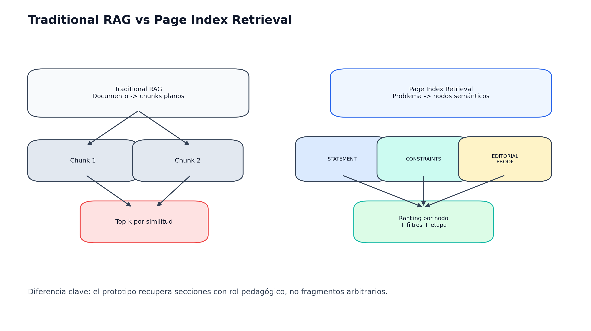
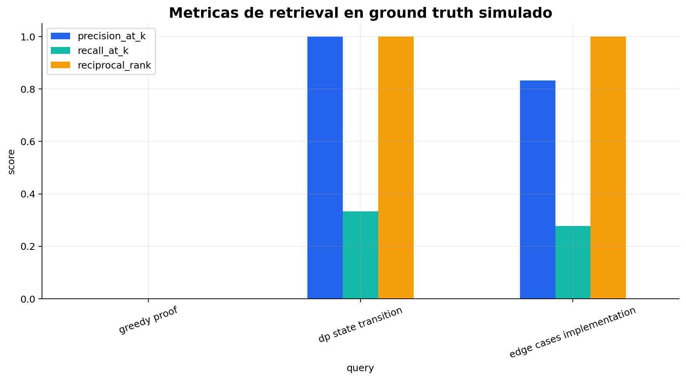
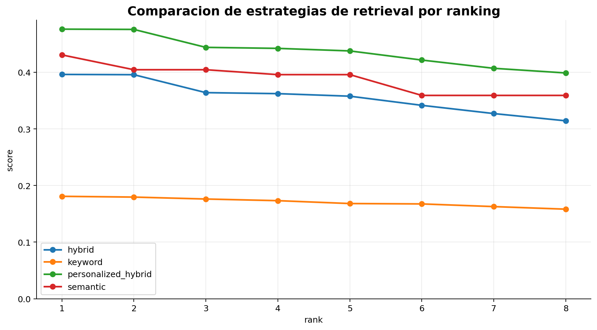
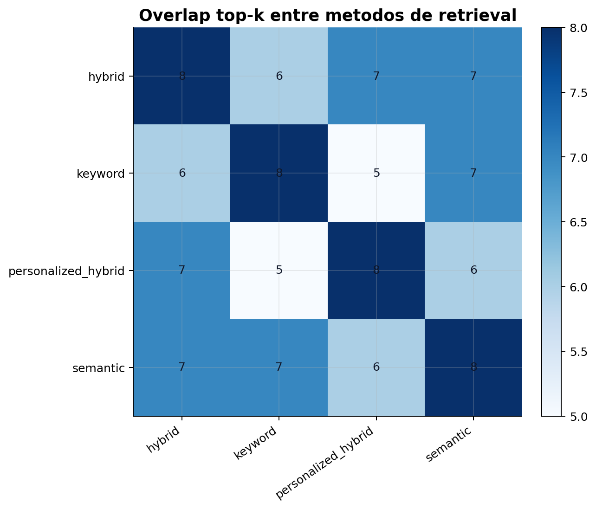
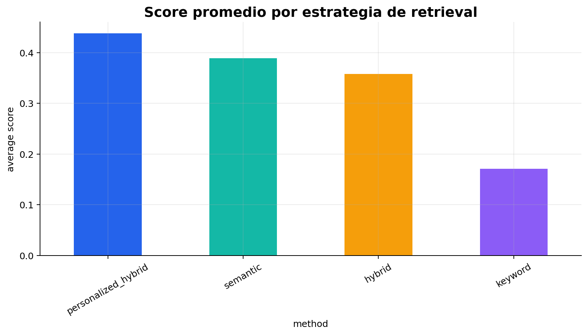
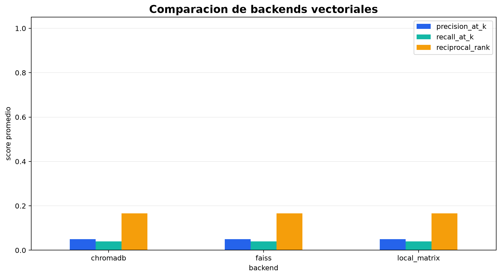
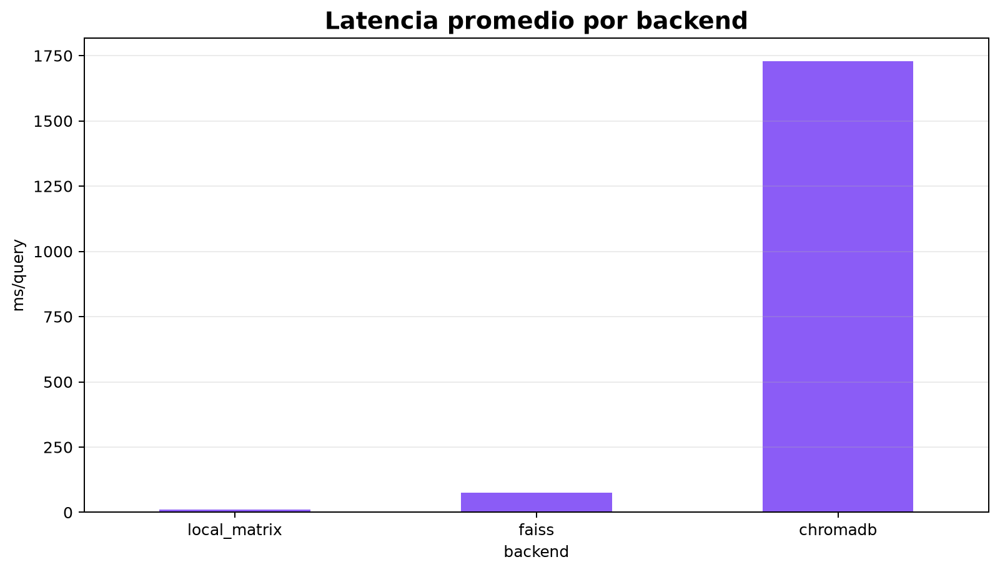
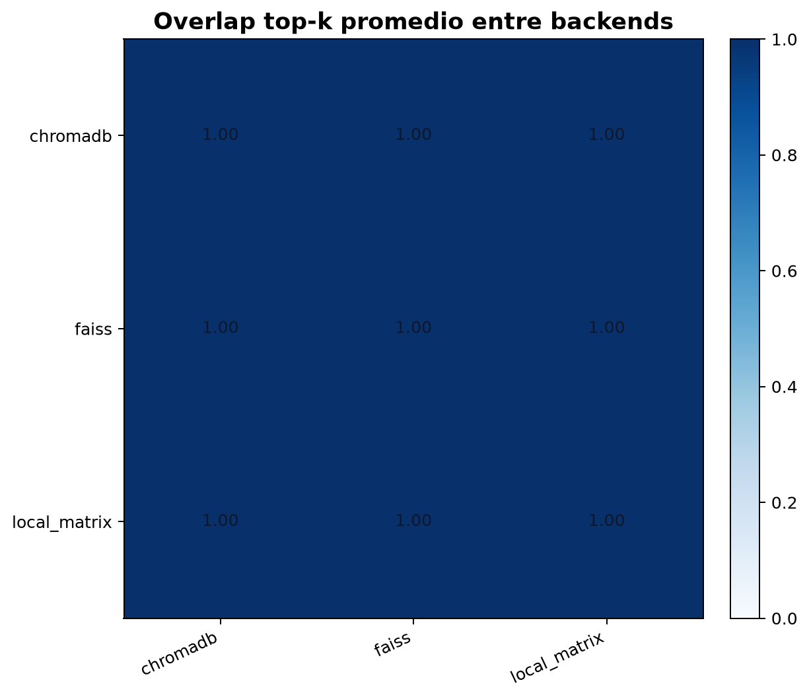
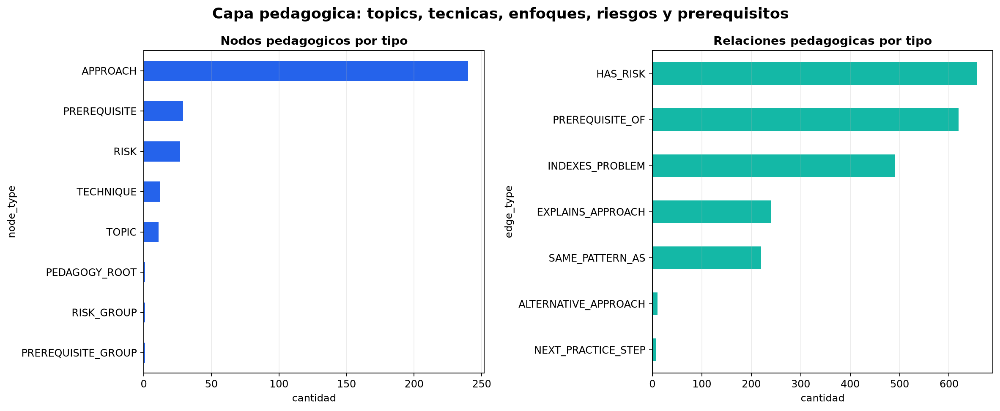
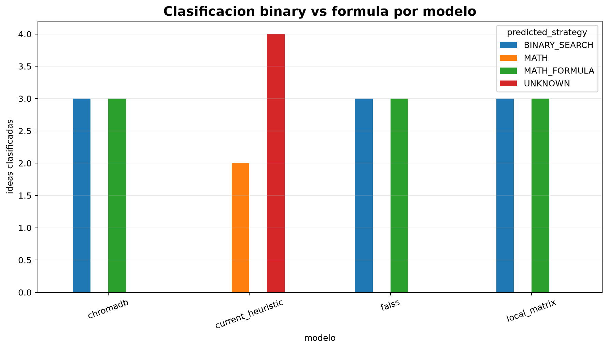
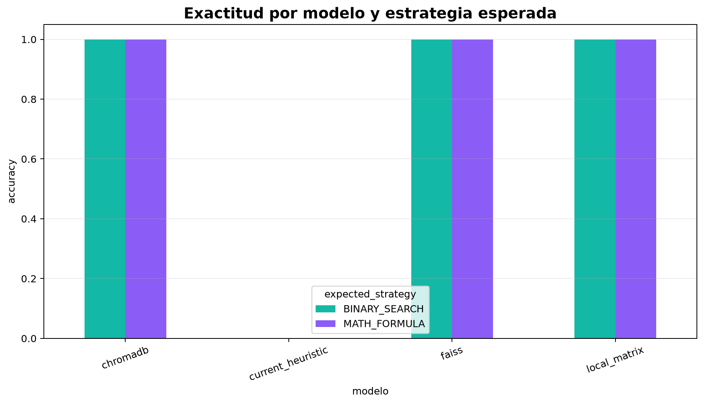
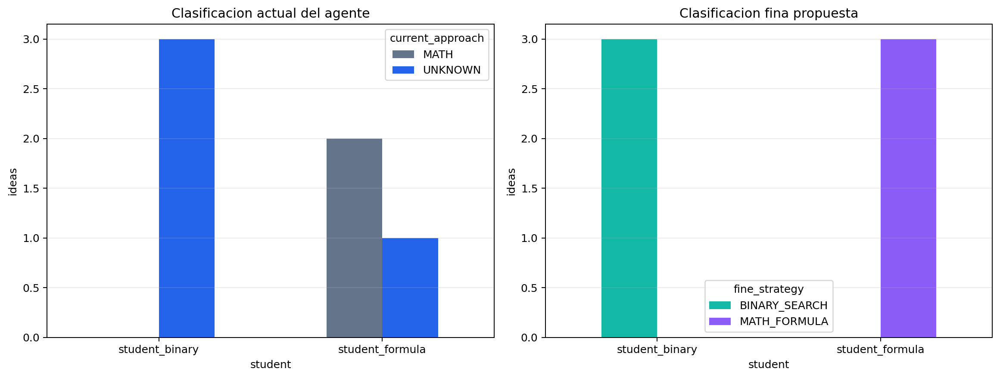
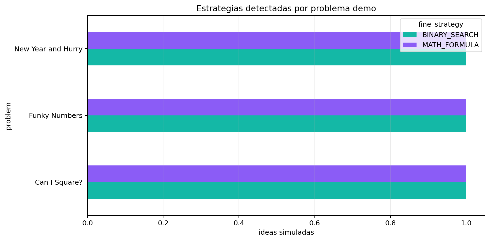
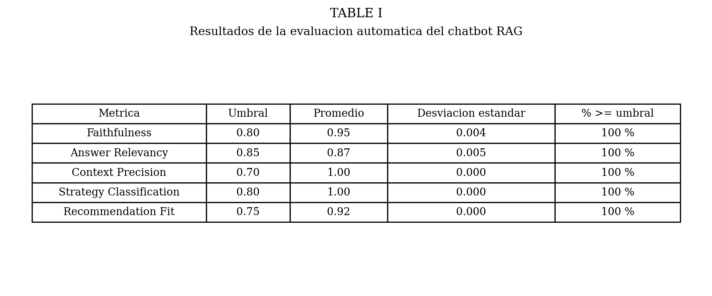
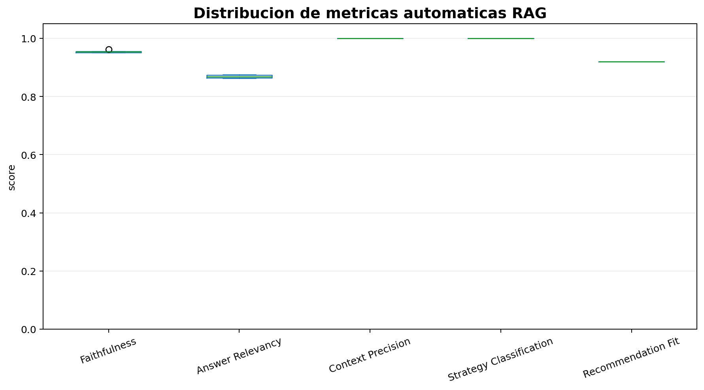